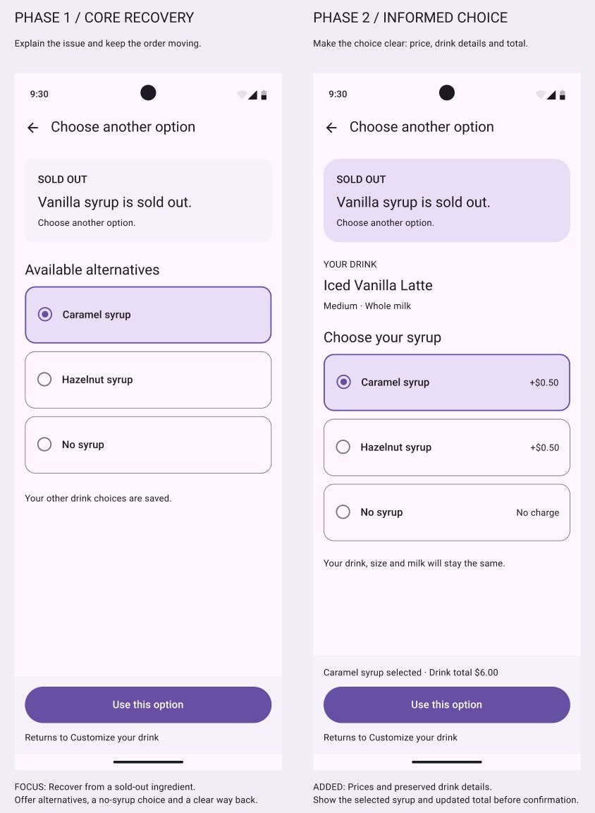
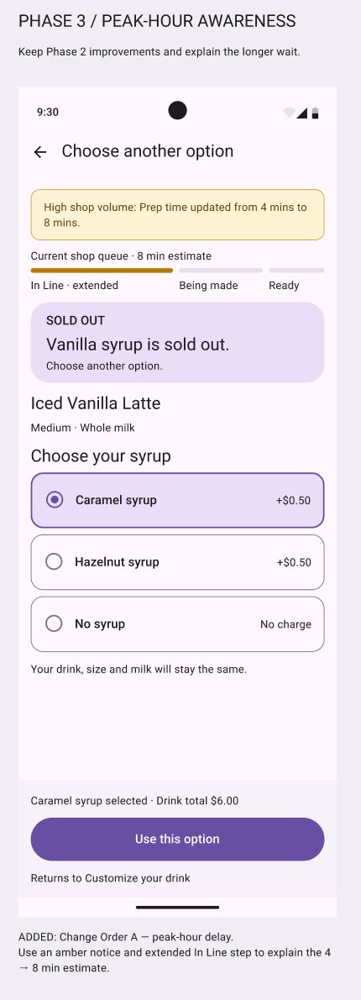

SpeedyBeans: working on Screen 3
· Product Team Sprint reflection
Our team worked on SpeedyBeans, a coffee preorder app for people on their way to work. We split the flow across five people. I was responsible for Screen 3, where users choose a replacement when an ingredient is sold out. My main goal was to let someone change their syrup without having to start the order again.
What changed
The first version was simple: a message saying vanilla syrup was sold out, three alternatives, and a “Use this option” button. It gave users a way forward, but it did not show the cost of each choice. In Phase 2, I added prices, the current drink details, and an updated total. I also made it clearer that the size and milk would stay the same.

Phase 3 added the peak-hour delay requirement. I used an amber notice to show the wait changing from four to eight minutes. That made the screen more informative, but it also raised a question: was the delay notice taking too much attention away from choosing a syrup? That is something I would test rather than assume the extra information helped.

Working with the team
Having one screen each made the work easier to divide. We drafted in a shared Google Doc, compared our screens, and revised them together. For my part, the important connection was with Screen 2: after choosing a replacement, the user should return to customization with the new syrup and their other choices saved.
Putting the screens together showed details we still needed to align, including drink names, store names, and order numbers. Using the same purple Material 3 style helped, but the information also needed to match. Next time, I would agree on one sample order with the team earlier and walk through the whole flow before spending much time on spacing.
A thought from the reading
Golden Krishna’s The Best Interface Is No Interface questions the habit of adding screens as the default answer to a problem. That made me think about why my screen was needed at all. The customer wants a coffee, so the replacement step should be short and only appear when necessary. I would like to test whether showing availability earlier in customization could avoid some of these interruptions.
View the three design phases in Figma
Reading connection: Golden Krishna, The Best Interface Is No Interface (2015), supplied excerpt, “Slap an Interface on It!”